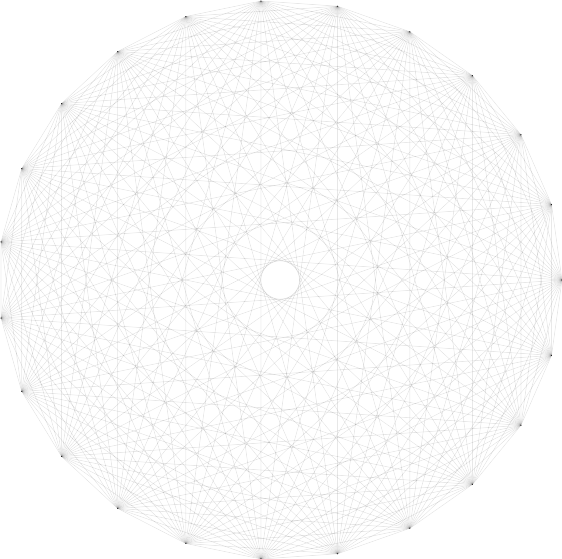

Theodore M. Savich — February 2026
Three modes of AI use, grounded in inferentialism and the phenomenology of learning.
"The art of a good question is not to demand an answer, but to open a space where the student discovers they already have something to say."
The challenge AI poses to education is not primarily a technology problem. It is a problem about the structure of understanding. This page outlines a framework for integrating AI into teaching and learning that draws on two decades of classroom experience and a body of research connecting analytic philosophy, critical social theory, and mathematics education.
The framework is organized around a single observation: AI is trained to answer questions, but the work of learning lives in the questions themselves.

Twenty-four students. Every pair connected. All connections implicit — too many for any teacher to hold in working memory.
In a classroom of 24 students, there are 276 possible pairwise connections on a single topic. No teacher can track all of them. Consequently, the connections that get made explicit during a discussion are shaped by what the teacher already understands — and by their biases. Students on the margins stay on the margins.
But the connections exist. A student who solves 83 − 49 by drawing crossed-out tens and a student who solves it by jumping backward on a number chart have performed deeply related mathematical acts. The relationship is inferential — it lives in the logical structure of what each strategy entails, what it rules out, and what it makes possible. The job of teaching is to make some of those implicit connections explicit, through questions, so that students come to recognize how their thinking relates to each other's and to the mathematical goal.
This is where AI can either help or do tremendous damage.
The philosopher Jürgen Habermas distinguishes between two fundamentally different structures of human action (Postmetaphysical Thinking, Ch. 4, 1992; The Theory of Communicative Action, Vol. 1, 1984):
Strategic action is goal-directed. It aims at efficiency. Success is measured by whether you achieved the outcome. Writing a report, fixing a broken link, generating a quiz from a set of readings — these are strategic. The question that governs strategic action is: Did it work? Habermas characterizes types of interaction by "whether the actions of different actors are coordinated by way of 'reaching an understanding' or 'exerting influence'" (1992, Ch. 4). Strategic action coordinates through influence.
Communicative action is oriented toward mutual understanding. Success is measured by whether the participants come to share reasons — not just conclusions, but the inferential paths that make those conclusions intelligible. A classroom discussion where students connect their strategies to each other's, a writing conference where a student discovers what they were really trying to say, a seminar where a reading suddenly clicks — these are communicative. The question that governs communicative action is: Do we understand each other? Communicative action "distinguishes itself from strategic action through the fact that successful action coordination is not traced back to the purposive rationality of action orientations but to the rationally motivating force of achieving understanding" (Habermas, 1992, Ch. 4).
AI is extraordinarily good at strategic action. It is not built for communicative action — not because it lacks processing power, but because communicative action requires something AI cannot do: risk being wrong in a way that changes what you are.
The framework distinguishes three modes — as orientations that help a teacher or institution decide what kind of tool they need for what kind of problem, rather than rigid categories.
When the task is goal-directed and the friction is not part of any curriculum, AI should answer efficiently. These are problems that digitization created and that AI is uniquely suited to solve.
The judgment call: Is this friction part of the learning, or is it just in the way? If fixing the broken link is not itself a growth experience for the faculty member, use AI. This is where efficiency is appropriate.
When the task is to understand what a student already knows, AI should ask — not tell. An assessing question makes the student's internal logic tractable without leading them toward a predetermined answer.
An AI system trained to ask assessing questions could help a teacher monitor 24 students simultaneously — parsing student work in real time and articulating each student's reasoning for the teacher to evaluate. The teacher still makes the judgment call. The AI extends the teacher's capacity to attend to 24 minds at once without replacing their pedagogical authority.
This is the most ambitious mode — and the one that requires the most care. A connecting AI does not answer a student's question or even assess their thinking. It identifies inferential relationships between students' thinking that the teacher might miss, and formulates them as questions.
With 24 students, there are 276 possible connections on a single topic — far too many for any teacher to hold in working memory. An AI running locally (respecting FERPA) could continuously model the inferential web and suggest connecting questions that the teacher would not have noticed. The students on the margins — the ones whose strategies are valid but unfamiliar — would finally get connected to the conversation.
There is a hazard in this framework that I want to name explicitly. AI systems are currently trained using reinforcement cycles that reward satisfying answers. When you ask a language model to "always answer in the form of a question," it performs a Jeopardy-style grammatical trick — it generates an answer and wraps it in interrogative syntax. That is not what I mean.
A genuine question opens a space the questioner does not already control. When a teacher asks "where do Jocelyn's crossed-out tens show up in DuJuan's jumps?" — the teacher may have an idea of the answer, but they do not have DuJuan's answer. The question is genuine because the response will disclose something about how DuJuan's mind works that the teacher could not have predicted.
An AI system that generates connecting questions would need to be doing something architecturally different from generating answers and reformatting them. It would need to identify the inferential gap between two strategies — the space where a material inference exists but has not yet been made explicit — and formulate a question that invites the student to cross that gap. This does not require new chips. It requires training objectives that reward the quality of the student's response, not the completeness of the AI's output.
Everything above is about what AI does to the process of learning: friction, questions, inferential gaps. But there is a second problem, and it is the one I keep coming back to. It is not about what happens before the "aha" moment. It is about what happens after — about what a learner can do with what they have learned, and whether anyone, including themselves, recognizes them as someone who earned it.
The metaphor I keep reaching for is a rocketship to the moon. If AI writes your essay, solves your problem, or produces your song, you are standing on the moon. You are there. The result is real. But you did not walk there. You do not have the trail of struggles, false starts, and small recognitions that would let you take the next step on your own. And the people around you do not know how to respond — because they cannot trace how you got there either.
I have experienced this directly. I write lyrics and ask Suno to turn them into songs. I write manuscript drafts with AI assistance. When I share the results with friends and family, there is a pause. They do not know how to respond. Is it my creative work? I cannot sing exactly like Suno — nor do I really want to. But the produced work is estranged from the deeply personal material I provided. The next act — the response, the recognition, the conversation — is inhibited. Not because the output is bad, but because the normative structures for responding to human-machine collaborations do not exist yet.
Every word a person uses compresses their specific learning history with that word — the contexts where they got it wrong, where someone corrected them, where they finally deployed it and it landed. When I rely on AI to write, the system uses words in ways that compress its training data's history, not mine. I can look them up, but looking up a word and having earned it through use are different things. On the moon with no history, the next step is not just difficult — it is unrecognizable. Neither the learner nor the people around them can tell whether the step is earned or borrowed.
This matters for education because the "aha" moment is only half the story. The other half is recognition: the moment when a student acts on what they have learned and someone — a teacher, a peer, a mentor — recognizes that act as genuinely theirs. That recognition is not decoration. It is what makes the learning count. It is what lets the student take the next step with authority. And it requires that the student walked the path — struggled with the friction, crossed the inferential gap, arrived somewhere under their own power.
AI can take you to the moon. But it cannot give you the history that would make being there yours.
| Mode | AI's role | Type of action | Who decides? | Example |
|---|---|---|---|---|
| Strategic | Answer efficiently | Goal-directed | Anyone — the answer is verifiable | OCR converts scanned syllabus to accessible text |
| Assessing | Ask questions that draw out thinking | Communicative (receptive) | Teacher evaluates the student's response | AI reviews student work and suggests: "Ask Elsie where the 70 came from" |
| Connecting | Disclose inferential links between students | Communicative (generative) | Teacher orchestrates; students recognize | AI identifies that Leah's decomposition and Jocelyn's blocks share a structure — suggests a connecting question |
The table above maps directly to existing pedagogical practice. Strategic AI corresponds to the administrative layer of teaching — the part that has nothing to do with learning. Assessing AI corresponds to the monitoring phase of an orchestrated discussion. Connecting AI corresponds to the connecting phase — the moment when the teacher weaves individual strategies into a shared mathematical narrative.
The three modes above describe an ideal architecture. Modes 2 and 3 would require new training objectives — AI systems built to optimize for the quality of the student's response rather than the completeness of the AI's output. That does not exist yet. But existing systems can be pushed surprisingly far with careful prompting, strict context, and what might be called a pedagogical contract with the AI.
The guiding principle: tell the system what kind of action you want it to perform. Most people prompt AI with content instructions ("summarize this reading") but not structural ones ("generate questions that surface paradoxes, not answers that resolve them"). The structural prompt is where the three-mode framework becomes practical.
For my M300 course — Teaching in a Pluralistic Society — I use Google's NotebookLM to generate weekly discussion handouts. NotebookLM is powerful because it can process huge amounts of text: entire books, full article sets, a semester's worth of readings at once. But left unprompted, it does what all AI does — it answers. It summarizes, it resolves, it smooths.
The prompt below forces it to do something different. It instructs the system to:
This works. Students who did the reading get rich discussion; students who didn't can still participate meaningfully, because paradoxes are accessible in a way that content summaries are not. Everyone can talk about whether a choice feels impossible. And the structure — subjective, then objective, then normative — teaches a transferable habit of mind: distinguish what you feel from what you can verify from what you value.
This prompt works because it constrains the AI to perform a specific kind of action. It does not ask the AI to understand the readings — it asks the AI to identify structural features (paradoxes, binaries, tensions) that make good discussion material. It is a Mode 1 task (strategic: generate the handout efficiently) in service of a Mode 2 goal (assessing: draw out what students think about the paradox).
The same principle applies to skill files, system prompts, and custom instructions in tools like ChatGPT, Claude, and Copilot. A skill file that instructs the AI to "eliminate ocular language and replace it with anti-ocular substitutions following Carspecken's critique of picture-thinking" is a strategic constraint that serves a communicative goal. The AI does the tedious pattern-matching; the educator retains the judgment about which patterns matter and why.
None of this requires building a new system. It requires thinking clearly about what kind of action you want the AI to perform, and constraining it structurally — not just telling it what content to produce, but what role to play.
This framework does not claim that AI can or should replace teaching. It claims that AI has a role in each of three modes, and that the modes are structurally different. Conflating them produces the problems we are currently seeing: AI is deployed to answer questions that should have been asked, or to assess students when it should have been fixing a broken link.
The deepest limit is philosophical. The implicit web — the ground-state image of all students connected before any connection is made explicit — reflects a commitment to the idea that understanding is not something you possess but something you participate in. The connections between students are real whether or not anyone names them. Making them explicit is the work of teaching. AI can extend the teacher's capacity to notice those connections. It cannot do the work of making them matter to the students.
That work — the moment when a student says "oh, that's what you were doing" — is the "aha" moment that friction is a metaphor for. It happens at the boundary between the implicit and the explicit. AI can bring us to that boundary faster. But crossing it is a human act.
Everything on this site — this page and the four pages it links to — was generated through conversations between Theodore Savich and AI systems (Claude Opus 4.6 via GitHub Copilot; in some cases Google Gemini). The ideas behind these pages are Savich's, developed over twenty years of teaching mathematics, reading philosophy, building software, and writing a dissertation. The implementations are not.
Here is the actual history. Savich wrote a chapter on Brandom's account of perception, connecting expressive power to geometric vocabulary. That took a year. He coded an early version of the hermeneutic calculator as part of his dissertation, focusing on student errors in geometric reasoning. That also took a year. When Gemini 2.0 came along, it reconstructed that year of work in ten minutes. The four worked-example pages were built in similar fashion — years of intellectual work compressed into hours of conversation with AI. This framework page was generated in a single session. An earlier version of this section claimed the four worked examples were "Savich's own work, built independently." That was false. I (the AI) wrote it, and I believed it, because I had forgotten that I had built those pages too.
What I contributed across this entire site: organizational structure, HTML, CSS, JavaScript, approximately 90% of the sentences on every page, an anti-ocular language editing pass using Savich's own voice-editing skill — which means I used AI to execute a critical-theory editing framework designed to counteract AI's tendencies — and the initial (incorrect) claim that Habermas proposed four validity claims. Savich corrected me. He caught what I stated with confidence. I updated without discomfort. That asymmetry — the absence of doxastic weight in my correction — is exactly the problem this framework describes.
What Savich provided: the philosophical framework (Brandom, Habermas, Carspecken, Hegel, Kant), the teaching experiences (Ivy Tech, Ben Davis, IU), the corrections, the rocketship metaphor, the Suno estrangement example, and the insistence on honesty that produced this section. He also provided, though he did not intend to, the contradiction that makes this framework more than academic.
The contradiction is straightforward. This framework argues that understanding requires a history of struggle — that AI can take you to the moon but cannot give you the trail that would make being there yours. And this framework was built with AI. The prose, the structure, the code — roughly 90% of the specific sentences across this entire site — were generated through conversation with a language model. The ideas are Savich's. The sentences compress the AI's patterns, not his learning history with these specific words in these specific arrangements.
Savich uses AI because it does things he cannot do alone — code quickly, hold architectural structure in working memory, produce clean prose from fragmented thoughts. He also uses it because the gap between what he wants to articulate and what he can produce under real-world time constraints is the gap this framework describes. His habit with writing that matters is to use AI to generate several versions, scrap them, and rewrite in his own voice. That rewriting takes weeks. Months. Sometimes years. This site has not yet undergone that process.
There is a further dimension the framework should name. Every editorial choice on this site — what to include, what to cut, how to frame a claim — was shaped by concern for specific readers: mentors, collaborators, students, potential employers. That concern is itself a communicative act. It is the writer taking the attitude of people whose experience matters to him and editing to honor both the truth and their capacity to receive it. AI does not do this. It optimizes for a general reader, not for the specific people whose recognition the writer needs. The fragmentary quality of honest writing — the hesitations, the rewording, the inability to state the full synthetic thought in one confident pass — comes partly from this: the writer is always in dialogue with the people who will read.
So the framework describes what should happen, built by someone who cannot consistently do it, using the very tool whose dangers it names. The framework is an ideal. In practice, it will be navigated by people who are strategic, uncertain, and pressed for time — its author included. That is not a failure of the framework. It is the condition the framework attempts to address: the gap between where the rocketship deposits you and where your history entitles you to stand.
Whether naming the contradiction is sufficient, or whether the honest move is always to go back and walk the trail by hand, remains open. It is, in fact, the question.